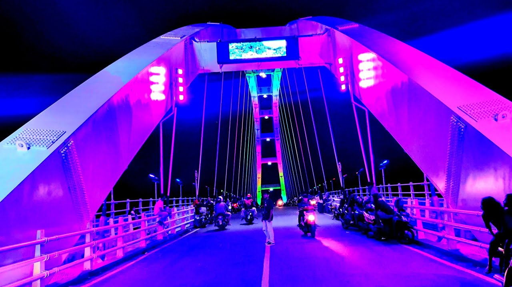

Jembatan Sosrodilogo
The bridge named Sosrodilogo began to be built in 2016, when Bojonegoro was led by Dr. Suyoto, M.Sc., who is usually called Kang Yoto. The bridge was recently completed and inaugurated by Kang Yoto's successor, Dr. Hj. Anna Muawanah, M.H., in 2019. This bridge has a length of 145 meters and a width of 9 meters.